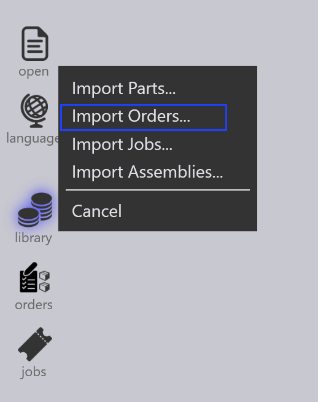
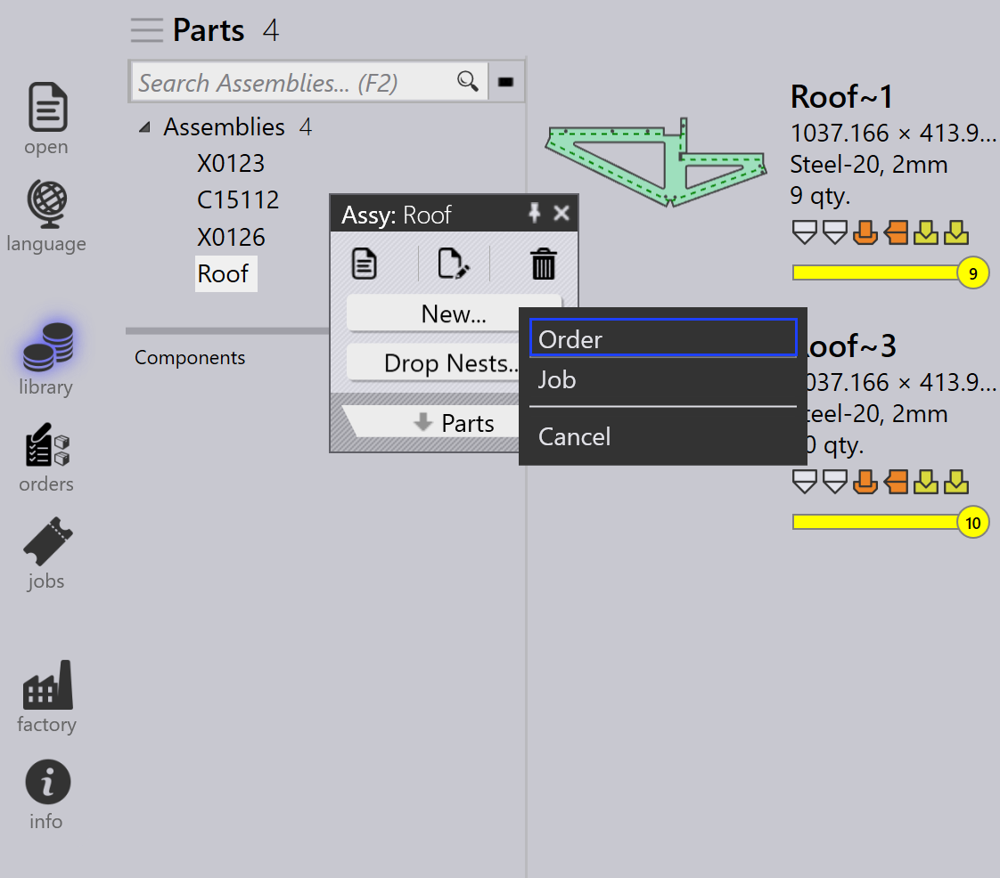

Εισαγωγή παραγγελιών
Οι παραγγελίες μπορούν να δημιουργηθούν ή να εισαχθούν χρησιμοποιώντας τις ακόλουθες μεθόδους:
-
Εισαγωγή παραγγελιών από αρχεία υπολογιστικού φύλλου.
-
Εισαγωγή παραγγελιών αυτόματα μέσω ρυθμίσεων παρακολούθησης.
-
Δημιουργία παραγγελιών από υπάρχοντα parts στη βιβλιοθήκη part.
-
Δημιουργία παραγγελιών από στατικά nests assembly.
Εισαγωγή παραγγελιών από υπολογιστικό φύλλο
-
Μεταβείτε στο άνοιγμα → Εισαγωγή _παραγγελιών….

-
Οι υποστηριζόμενες μορφές υπολογιστικού φύλλου περιλαμβάνουν CSV, XLSX και XML.
-
Επιλέξτε το απαιτούμενο αρχείο υπολογιστικού φύλλου και κάντε κλικ στο άνοιγμα.
-
Η διαδικασία εισαγωγής είναι παρόμοια με τη ροή εργασίας εισαγωγής Job/Assembly.

| Μπορείτε επίσης να μεταφέρετε και να αποθέσετε απευθείας το υπολογιστικό φύλλο στη σελίδα Orders για να εισαγάγετε παραγγελίες. |
Εισαγωγή παραγγελιών χρησιμοποιώντας ρυθμίσεις παρακολούθησης
-
Ενεργοποιήστε την επιλογή Εισαγωγή λογιστικού φύλλου από το 'Φάκελο Live' στο Ρυθμίσεις επιτήρησης.
-
Επιλέξτε Εισαγωγή παραγγελιών στο Προαιρετική επιλογή εισαγωγής λογιστικού φύλλου.
-
Διαμορφώστε την τοποθεσία φακέλου από την οποία πρέπει να εισαχθούν οι παραγγελίες.
-
Το σύστημα παρακολουθεί συνεχώς τον διαμορφωμένο φάκελο.
-
Τα νέα προστιθέμενα αρχεία υπολογιστικού φύλλου εισάγονται αυτόματα στις Orders.

| Για λεπτομερή βήματα διαμόρφωσης, ανατρέξτε στην τεκμηρίωση Watch settings . |
Δημιουργία παραγγελιών από τη βιβλιοθήκη part
-
Επιλέξτε τα απαιτούμενα parts από τη Βιβλιοθήκη Part.
-
Κάντε δεξί κλικ και επιλέξτε Νέο… → Παραγγελία για να ανοίξετε τον διάλογο Νέες παραγγελίες.

-
Εισαγάγετε τις απαιτούμενες λεπτομέρειες όπως ποσότητα, ημερομηνία παράδοσης και προτεραιότητα.

-
Κάντε κλικ στο OK για να δημιουργήσετε τις παραγγελίες.
-
Το σύστημα μεταβαίνει αυτόματα στη σελίδα Orders.
-
Οι δημιουργημένες παραγγελίες εμφανίζονται στη σελίδα Orders Ready για δημιουργία job.
Δημιουργία παραγγελιών από assembly
-
Κάντε δεξί κλικ στο απαιτούμενο Assembly.
-
Επιλέξτε Νέο… → Παραγγελία για να ανοίξετε τον διάλογο Νέες παραγγελίες.

-
Εισαγάγετε το απαιτούμενο Πλήθος συγκροτημάτων.

-
Κάντε κλικ στο OK για να δημιουργήσετε τις παραγγελίες.